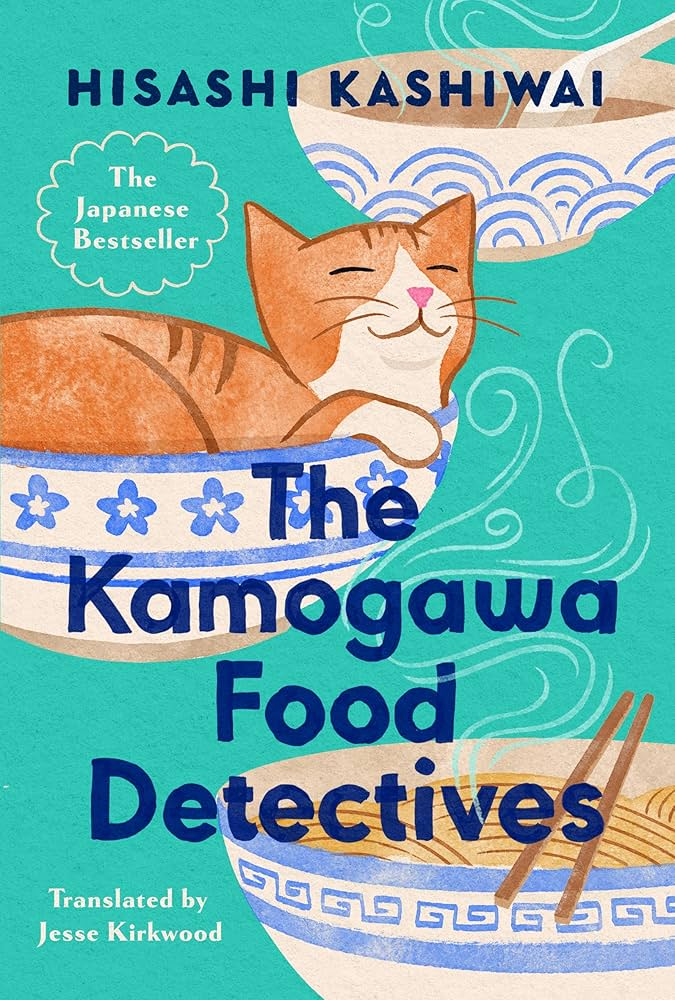

Paper Crane Pages

Cats and Cafes
In many Japanese novels that have captured the hearts of Western readers, cats appear as quiet yet meaningful companions, adding a layer of warmth and comfort to already whimsical narratives. These stories often center on a main character whose life begins to shift after encounters in cozy, often magical cafés. These settings become turning points in their journey. Fantastical elements are woven in gently, with the cat serving as a symbol of calm, mystery, or emotional connection. In books like Toshikazu Kawaguchi’s Before the Coffee Gets Cold, this recurring theme adds depth and charm to an already reflective and imaginative universe.
The Kamagowa Food Detectives
Written by Hisashi Kashiwai
Translated by Jesse Kirkwood
Synopsis
Tucked away on a quiet street in Kyoto, the Kamogawa Diner is no ordinary restaurant. Run by the warm-hearted Koishi Kamogawa and her father Nagare, it serves not just rich, comforting meals—but something far more meaningful.Together, the father-daughter team act as “food detectives,” using careful investigation to recreate dishes tied to a customer’s most cherished memories. These meals often unlock long-forgotten moments, offering a path to healing, closure, or rediscovered joy. At this diner of lost recipes, the past is never truly gone—it simply waits to be tasted again(Good Reads).
